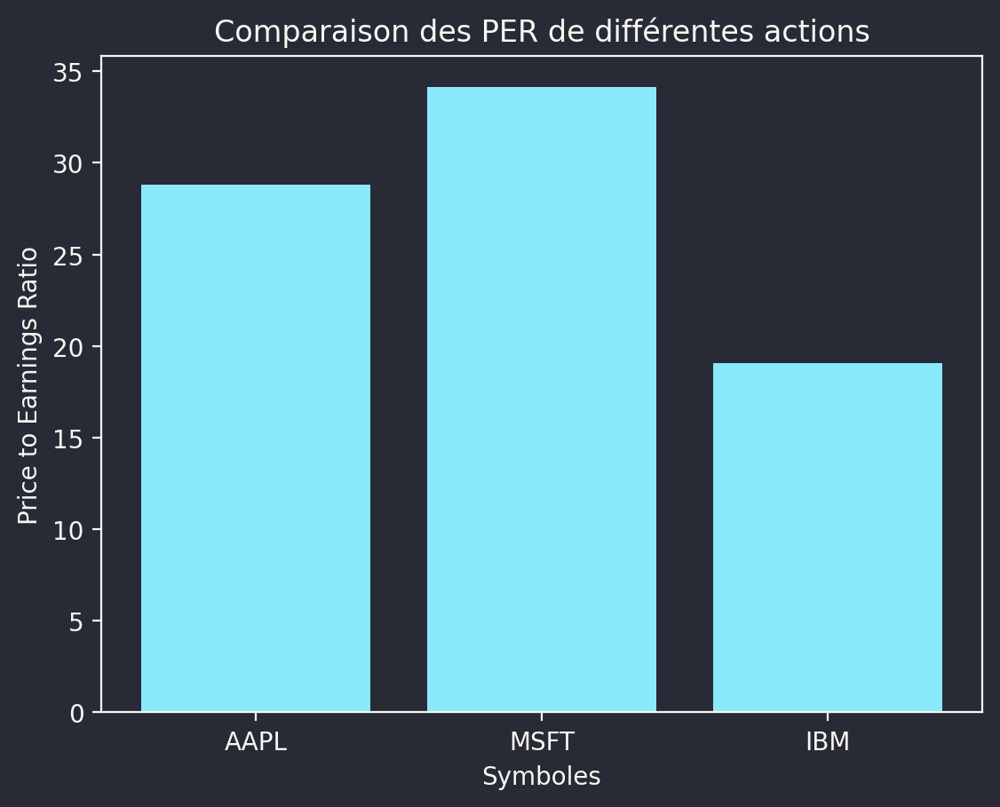

Obtenir la valorisation de plusieurs titres avec Python et Alpha Vantage

Introduction
Dans cet article, nous allons vous montrer comment récupérer le Price to Earnings Ratio (PER) de plusieurs actions en utilisant Python, la librairie Alpha Vantage et la bibliothèque de visualisation de données Matplotlib. Le PER est un indicateur financier qui permet d’évaluer la valorisation d’une action.
Le Price to Earnings Ratio (“PER”)
Le Price to Earnings Ratio (PER) est un ratio financier utilisé pour évaluer la valorisation d’une action par rapport à ses bénéfices. Il est calculé en divisant le prix actuel de l’action par le bénéfice par action (EPS) sur une période donnée, généralement sur les 12 derniers mois. La formule est la suivante :
\[ PER = \frac{Prix\ de\ l'action}{Bénéfice\ par\ action} \]
Un PER élevé indique que les investisseurs sont prêts à payer davantage pour les bénéfices futurs de l’entreprise, tandis qu’un PER faible suggère que les investisseurs estiment que l’action est sous-évaluée ou que l’entreprise a des perspectives de croissance limitées.
La librairie Alpha Vantage
Alpha Vantage est une plateforme de données financières qui fournit des API pour accéder à diverses informations sur le marché, telles que les cours des actions, les indicateurs techniques, les données sur les devises, les cryptomonnaies et bien d’autres. La librairie Python alpha_vantage permet d’interagir facilement avec ces API.
La licence gratuite d’Alpha Vantage permet d’accéder à la plupart des données sans frais. Toutefois, elle est soumise à certaines restrictions, notamment un nombre limité de requêtes par minute et par jour. Pour des usages plus intensifs, des plans payants sont disponibles.
Préparation
Pour utiliser yfinance afin de récupérer les valorisations des secteurs en Europe, vous pouvez suivre ces étapes :
- Installez alpha_vantage : pip install alpha_vantage
- Installez pandas : pip install pandas
- Importez les bibliothèques nécessaires et récupérez les données des secteurs en Europe.
Code Source
Voici un exemple de programme Python qui utilise la bibliothèque yfinance pour récupérer les valorisations des ETFs secteurs en Europe. Dans cet exemple, je vais utiliser quelques ETFs populaires en Europe pour illustrer le processus. Vous pouvez ajouter ou modifier les symboles d’ETFs dans la liste etfs pour récupérer les valorisations des ETFs que vous souhaitez.
Code
import keyring
import matplotlib
import matplotlib.pyplot as plt
from alpha_vantage.fundamentaldata import FundamentalData
# Remplacez 'your_api_key' par votre clé API Alpha Vantage
api_key = keyring.get_password("alpha_vantage_api_key", "email@email.com")
fd = FundamentalData(key=api_key)
# Fonction pour récupérer le Price to Earnings Ratio (P/E Ratio)
def get_price_to_earnings_ratio(symbol):
data, _ = fd.get_company_overview(symbol)
pe_ratio = float(data["PERatio"])
return pe_ratio
# Récupérer et afficher les P/E Ratios
symbols = ["AAPL", "MSFT", "IBM"]
pe_ratios = [get_price_to_earnings_ratio(symbol) for symbol in symbols]
matplotlib.rcdefaults()
blog_utils.apply_right_style()
plt.bar(symbols, pe_ratios)
plt.xlabel("Symboles")
plt.ylabel("Price to Earnings Ratio")
plt.title("Comparaison des PER de différentes actions")
plt.show()
None
Notez que les tickers d’ETFs dans etf_tickers sont des exemples. Vous devrez remplacer cette liste par les tickers des ETFs de secteurs en Europe que vous souhaitez analyser. Ce programme récupère le P/E Ratio pour chaque ETF et affiche les résultats à l’écran.
Conclusion
En résumé, dans cet article tres court, nous avons montré comment récupérer le Price to Earnings Ratio (PER) de plusieurs actions en utilisant Python, la librairie Alpha Vantage et la bibliothèque de visualisation de données Matplotlib. Le PER est un indicateur financier clé pour évaluer la valorisation d’une action et comparer différentes entreprises.
Sources de référence
Pour en savoir plus sur Alpha Vantage, la valorisation des actions et l’utilisation du Price to Earnings Ratio dans l’analyse financière, consultez les sources suivantes :
- Site officiel d’AlphaVantage : https://www.alphavantage.co/
- Documentation de la librairie Python
alpha_vantage: https://alpha-vantage.readthedocs.io/ - Investopedia, “Price-to-Earnings Ratio – P/E Ratio” : https://www.investopedia.com/terms/p/price-earningsratio.asp
- Corporate Finance Institute, “Price Earnings Ratio (P/E Ratio)” : https://corporatefinanceinstitute.com/resources/knowledge/valuation/price-earnings-ratio/
- Matplotlib, documentation officielle : https://matplotlib.org/